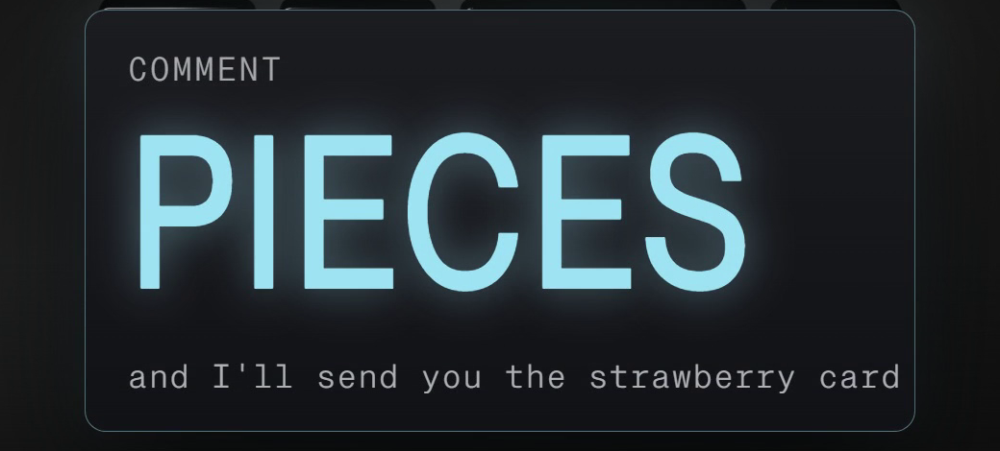

You commented PIECES — this is the strawberry card.
What the model gets instead of letters.
In 2024, ChatGPT said strawberry has two r's. It was never shown the letters.
Before a chat model reads your question, a cutter chops the text into pieces from a fixed list, and every
piece on that list has a number — the model gets the row of numbers, the letters stay on your screen.
Measured 2026-10-06 with OpenAI's tiktoken, encoding o200k_base (the encoding tiktoken maps to
gpt-4o, gpt-4.1, gpt-5, o1, o3 and o4-mini). Later OpenAI models may use a different encoding; the mechanism
is the same, the numbers may differ.
Companion to the reel · Watch it on @huberttheinventor

Nº001 · The two cuts
The same word, two different counts
A space changes everything. With a space in front, as it sits inside a sentence, “ strawberry” is one entry on tiktoken's list: a single piece, number 101830 — all three r's sealed inside it. Take the space away, as if the word opened a line, and the list has no match: “strawberry” falls back to three smaller pieces. Same letters, three times the pieces.
| “ strawberry” (space in front, as inside a sentence) | [101830] | 1 |
| “strawberry” (no space, as at the start of a line) | st + raw + berry = [302, 1618, 19772] | 3 |
| “How many r's are in strawberry?” | How many r 's are in strawberry ? | 8 |
Headers read left to right: what you type, what the model gets, how many pieces. Engineers call the pieces “tokens,” and OpenAI's API pricing is per token (developers.openai.com/api/docs/pricing, “Prices per 1M tokens,” read 2026-10-06; no rate is quoted here).
Language models don't see text like you and I, instead they see a sequence of numbers (known as tokens) github.com/openai/tiktoken, README
The rule in one line: the model reads piece numbers, never letters. The letters inside a piece are sealed, so a letter count is a memory task for the model — which is why counting the r's in one sealed piece meant recalling the spelling, not reading it.
Nº002 · How the list is built
Glue the most common pair, repeat
Byte-pair encoding, the method behind the list: start from single bytes, glue together whichever pair of pieces appears most often across a huge amount of text, and repeat until the list is full — 200,019 entries for o200k_base. Common words earn one piece of their own this way, usually with the leading space folded in, because “ strawberry” (with the space) turns up often enough in ordinary writing to win its own slot; “strawberry” alone, at the start of a line, does not, so it falls back to the three smaller pieces that do have slots.
Nº003 · Try it yourself
Your own prompt, cut the same way
Four lines of Python reproduce every number on this page, with tiktoken installed
(pip install tiktoken):
import tiktoken
enc = tiktoken.get_encoding("o200k_base")
ids = enc.encode("How many r's are in strawberry?")
print(ids, [enc.decode([i]) for i in ids])Nº004 · The 2024 miss
Why ChatGPT said “two” in 2024
It was handed one number for the whole word and asked what was inside it. It had to recall the spelling from memory, and the recall was wrong — ChatGPT (GPT-4o) answered two (blog.legoktm.com, 10 Aug 2024; community.openai.com thread 829618, 19 Jun 2024). Most chat models cut text into pieces this way; what has changed since is training and tools, which this page does not measure.
The honest scope
Every number on this page is read directly from tiktoken 0.14.0, encoding o200k_base,
measured 2026-10-06, and matches the hash-locked card in the video repo (sha256
1e24fa98…acf75). No rate or price figure is quoted, only the fact that OpenAI bills per
token. The 2024 ChatGPT answer is reported from two outside sources, not re-tested here; no claim is made
about which model or version answers this question today.
One system, taken apart.
Same treatment, different machine. No pitch, no thread-bait, and an unsubscribe link that works.
Take it with you
The strawberry card is this page: both cuts with their numbers, the rule in one line, and four lines of Python that show your own prompt's pieces, free, no email.
The List
One a week. And the other seven, now.
Confirm your address and the whole set arrives — all ten field guides, exactly as they are on the site, nothing held back for subscribers. After that, one new system taken apart every week. No pitch, no thread-bait, and an unsubscribe link that works.